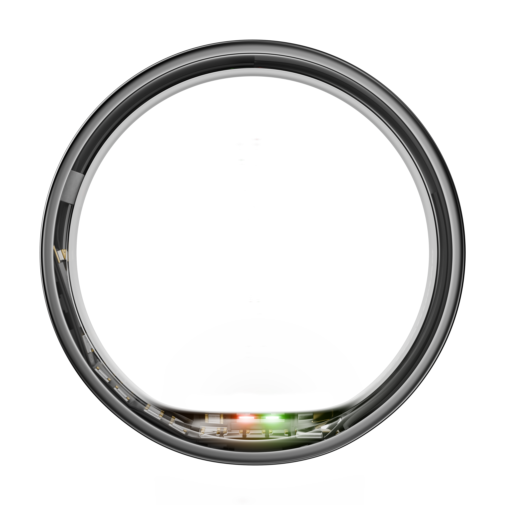
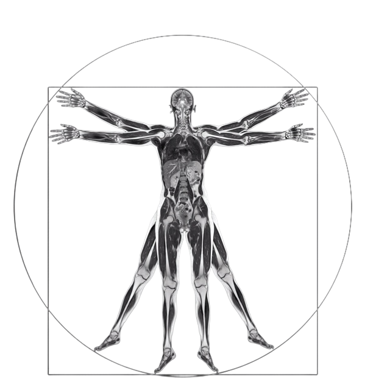

01
Live Pill
live
12:28AM
120 BPM
Relaxed
11,489
Data
Speed
Tap the card — or press
Space
02
Bio Intelligence
Bio Intelligence
What should I do to improve my VO2 max?
Take a 20-min walk
Low ferritin pattern • Trend detected
Chat with Jade
State
Speed
Tap the header to expand · drag the cards to browse insights
03
Live Pill · V2 — Liquid metal
live
120 BPM
Relaxed
11,489
State
Speed
Liquid-metal field drifts continuously · tap the card to expand
04
Activity Detection
Today's Activities
+62 pts
Confirm style
Recorded icon
Speed
Tap ✓ to confirm & record · ✗ to dismiss · switch the confirm style above
05
Battery Low Notification

Low battery
Less than 30% remaining
Variant
Speed
Card drops in & ripples, then calms · tap ✕ to collapse it into the menu
06
Stacked Notifications
Sent to back
Speed
Swipe or ✕ to dismiss · Firmware can't be dismissed — swipe it to send it to the back
07
Calibration · Dynamic Island
YOUR EFFORT FOR THE DAY
91EFFORT
89
Sleep
79
Recovery
92
Movement
9:41
Home
Longevity
✻
Plugs
Zones
Baseline calibration started
Keep wearing your Ring
12 days left


Speed
Auto-plays on first open · expands from the island, glows, auto-collapses after 8s · swipe up to dismiss